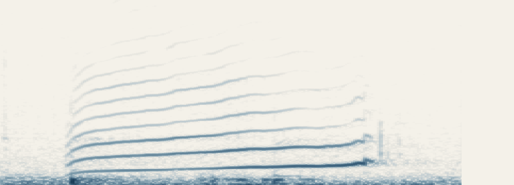
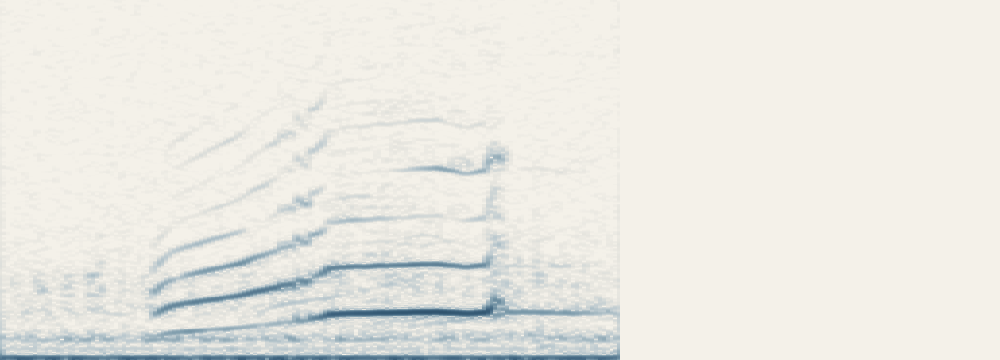

參考 A
個體編號 尚未顯示
三段都來自縱紋腹小鴞。
個體編號來自原始資料，並非本頁重新辨識的結果。
個體編號 尚未顯示
個體編號 尚未顯示

個體編號 尚未顯示

先聽聽看，再揭曉是哪一隻。
縱紋腹小鴞是一種小型貓頭鷹，常見於開闊林緣與果園。牠沒有耳羽束，褐色羽毛帶著白色斑點與腹部縱紋。上方插畫讓我們認識這種鳥；三段叫聲則是真實錄音，原資料各自記錄了牠們的身分。
在同一個地方反覆錄到小鴞，可能是原來那隻，也可能換了另一隻。若要追蹤個體的活動，就得比「這是小鴞」再多走一步。只憑聽起來相像，或聲譜形狀接近，還不能確定是同一隻。
研究者讓電腦學習叫聲的差異，再拿新的錄音和已知身分的錄音比較。訓練時聽過的個體，和第一次遇到的個體，會一樣容易認嗎？
研究者把錄音屬於哪一類動物、哪個物種、哪一隻個體，一起告訴模型，幫助它學習個體間的聲音差異。
已知身分的訓練叫聲
一起學習聲音特徵
研究使用已切好的短叫聲。OpenL3 先把聲音轉成特徵，再由適配網路調整這些特徵，讓它們更適合用來辨認個體。
模型比較的是一整組聲音特徵，不會只靠某個音高就認定是哪一隻。兩段叫聲的音高、節奏或聲譜相似，仍需要其他身分紀錄來核對。
研究利用類群、物種與個體標籤，引導模型學習錄音之間的關係。例如，兩段聲音可以同屬鳥類、同屬縱紋腹小鴞，卻來自不同個體。
模型訓練時同時參考這幾層標籤，學習它們之間的關係，並非先認完鳥類、物種，才開始認個體。
學好特徵後，模型用近鄰方法找出最相近的參考錄音，再判斷新叫聲可能來自哪一隻。參考資料收錄了哪些個體、每隻有多少錄音，都會影響辨識結果。
OpenL3 負責擷取特徵，在這項研究中保持固定；適配網路則學習怎樣調整特徵來辨認個體。投影網路只在訓練時用來計算對比學習的損失，最後分類仍比較學得的特徵。本頁用圖解介紹這個方法，沒有重新執行模型。
動畫會先用三段錄音說明怎麼比較，再介紹論文如何測試辨識能力。錄音原有的個體編號，會另外標清楚。
從三段真實叫聲開始，看看聲音特徵如何幫助比對，再讀論文的測試結果。
96 秒，包含真實叫聲。按下播放後才會出聲，可以暫停、重聽、切換段落，或在原頁面放大。
聲音動畫會在開啟這一頁後載入，也可以直接讀下方解說。
先聽兩段縱紋腹小鴞的短叫聲，記住它們的聲音。情境圖幫助認識動物，並不是錄音個體的照片。
加入一段待比較聲音，可以和 A、B 反覆重聽。聽起來相像，還不足以確認身分；重播也仍是同一筆錄音。
聲譜橫向是時間，縱向是頻率。較深的地方表示那個頻率的聲音較強。游標跟著原速錄音走，三張圖使用相同刻度。
類群、物種與個體標籤共同幫助模型學習聲音特徵，不是依序通過三道分類關卡。
模型會把新叫聲和參考錄音轉成特徵，尋找相近的錄音。動畫用這三段聲音說明步驟，沒有重新跑模型，也沒有替它們評分或排名。
A 與待比較聲音的個體編號都是 108，B 是 193。這些身分記錄由原資料提供；模型辨認得如何，要另外看論文的測試。
對已知小鴞個體的新錄音，加入類群、物種與個體的關係後，個體平衡準確率由 44.7% 提升至 70.3%。這兩個數字來自論文中同一項測試。
另一項測試涵蓋 7 個物種、21 個陌生個體，每隻只給一段參考錄音。SC 為 6.0%，最佳 HCλ 為 15.3%。分類關係有幫助，但只靠一段叫聲認陌生個體，仍很困難。
訓練時用過錄音的個體，與訓練時沒聽過的個體，辨識起來難度不同。研究分別做了測試。
已知的小鴞個體訓練時已使用這些個體的錄音
換新的錄音測試
陌生個體訓練時未使用這些個體的錄音
每隻只給一段參考錄音
先算每隻被辨認正確的比例，再對個體取平均。
7 個物種、21 個陌生個體
訓練時沒見過這些個體，每隻只提供一段參考聲音。最佳 HCλ 的表現優於 SC，但 15.3% 也顯示，在這種情況下仍很難準確辨認個體。
論文 Table III同樣先算每隻，再取平均；不是把所有錄音混在一起計算。
70.3% 與 15.3% 用的是不同個體與參考錄音設定，並非同一批小鴞前後兩次的成績。測試陌生個體時，研究者還把原有訓練錄音放進參考集合，增加辨識時的干擾。
本頁三段聲音的個體編號沿用原資料，讓我們可以核對聽到的是誰。這三段錄音不足以評估整個模型的準確率；檔名不同，也不表示它們錄於不同日期、來自不同次觀察，或能證明跨年仍是同一隻。
方法與結果依據 Ines Nolasco、Ilyass Moummad、Dan Stowell、Emmanouil Benetos 的 Acoustic identification of individual animals with hierarchical contrastive learning，2024 年預印本 v1。研究於 2025 年收錄於 ICASSP。
三段錄音出自 Dan Stowell、Tereza Petrusková、Martin Šálek、Pavel Linhart 的鳥類個體聲音資料集，採 CC BY 4.0，原錄音著作權屬記錄者。
檔案上的 train／test 是原資料集的分組名稱，不能據此確定這三段錄音在 Nolasco 研究中被拿來訓練還是測試。本頁沿用原有個體編號，沒有重新執行模型或另外鑑定個體。
第一頁的小鴞與果園由 AI 生成，只用來交代物種與環境，不是研究現場或 ID 108／193 的實拍照片。旁邊三張聲譜來自實際錄音；插畫中的鳥並不是錄音裡的個體。動畫開場另用生成情境圖。
三段錄音的試聽音檔只調整音量，沒有改速度、音高或各段內的叫聲。動畫會依教學順序重播同一錄音，沒有加入配樂。波形與聲譜由實際音檔計算，三段使用共同尺度；音量差異不當作身分證據。
原錄音的 CC BY 4.0 聲明不套用到生成情境圖。完整來源紀錄、聲音處理與研究結果依據可見素材說明及音訊與標註紀錄。